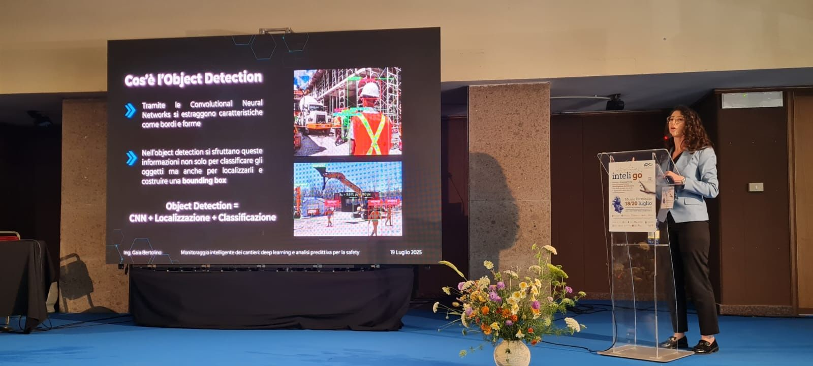

Invited talks
Generative Multimodal AI for Respiratory Diagnosis and Deep Learning for Construction Site Safety
Monte Terminillo, Italy

As a member of AIDIA — Associazione Italiana Donne Ingegneri e Architetti — I took part in InteliGO, an interdisciplinary training camp on the many implications of artificial intelligence across key sectors of society, held from 18 to 20 July 2025 on Monte Terminillo. The event brought together academia, professionals and institutions.
I gave two talks:
- Generative multimodal analysis for the diagnosis of respiratory diseases, based on my master’s thesis work.
- Intelligent construction-site monitoring: deep learning and predictive analytics for safety, on applying deep learning, such as object detection, to improve safety on construction sites.